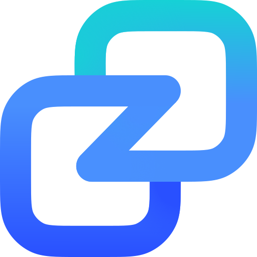

The first week we already had amazing results. Reply rate went through the roof.
247 boutique conversations across NL, France, Poland and London
 RonneMarketing, Endresz
RonneMarketing, Endresz
Most Innovative B2B GTM Engineering Agency 2026
Cold email, LinkedIn and Clay enrichment, run as one engine inside your CRM. Creative where it counts: the list, the angle, the first line.
 Case studyHow closed:in turned a saturated market into 142 opportunitiesWe built Gen-Zero's entire NL prospecting engine: KVK-anchored data, signal-based segmentation and Instantly infrastructure. 27,455 businesses contacted, investment recouped in under 2 months.Read case study
Case studyHow closed:in turned a saturated market into 142 opportunitiesWe built Gen-Zero's entire NL prospecting engine: KVK-anchored data, signal-based segmentation and Instantly infrastructure. 27,455 businesses contacted, investment recouped in under 2 months.Read case study
 ClayPartner
ClayPartner Case studyHow closed:in delivered 78 opportunities at a 13.9% reply rateA targeted outbound system that produced €1.56M in pipeline in 8 weeks, double the industry reply rate. They had to hire to keep up with demand.Read case study
Case studyHow closed:in delivered 78 opportunities at a 13.9% reply rateA targeted outbound system that produced €1.56M in pipeline in 8 weeks, double the industry reply rate. They had to hire to keep up with demand.Read case study
 Case studyHow closed:in reached an unreachable ICP for JamezzWe cracked a hard-to-find hospitality ICP and generated 81 qualified leads in 60 days from prospects most databases miss.Read case study
Case studyHow closed:in reached an unreachable ICP for JamezzWe cracked a hard-to-find hospitality ICP and generated 81 qualified leads in 60 days from prospects most databases miss.Read case study
 QwilrPartner
QwilrPartner Case studyHow closed:in opened 4 markets for EndreszA multi-market outbound rollout across NL, France, Poland and London that generated 247 boutique conversations and $128K+ in pipeline.Read case study
Case studyHow closed:in opened 4 markets for EndreszA multi-market outbound rollout across NL, France, Poland and London that generated 247 boutique conversations and $128K+ in pipeline.Read case study
 MistertafelCase studyHow closed:in took Mistertafel from zero B2B to 96 opportunitiesA B2C founder with no B2B experience. We built the outbound engine from scratch: 96 retail opportunities from 900 contacts in under 30 days, 35%+ reply rate.Read case study
MistertafelCase studyHow closed:in took Mistertafel from zero B2B to 96 opportunitiesA B2C founder with no B2B experience. We built the outbound engine from scratch: 96 retail opportunities from 900 contacts in under 30 days, 35%+ reply rate.Read case study


 Atelier LD
Atelier LD Empty Nest
Empty Nest Partner
Partner InstantlyPartner
InstantlyPartner Case studyHow closed:in ran a two-channel program for WetaxusCold email plus website visitor de-anonymisation in a high-trust market, two channels run together to surface and warm up demand.Read case study
Case studyHow closed:in ran a two-channel program for WetaxusCold email plus website visitor de-anonymisation in a high-trust market, two channels run together to surface and warm up demand.Read case study
 TrigifyPartner
TrigifyPartner
 ClaudePartner
ClaudePartner Partner
Partner

 Case studyHow closed:in sourced an audience that exists in no databasePhotographers sourced off the social graph, then a referral campaign that produced 33 opportunities at an 8.47% reply rate.Read case study
Case studyHow closed:in sourced an audience that exists in no databasePhotographers sourced off the social graph, then a referral campaign that produced 33 opportunities at an 8.47% reply rate.Read case study

 The Quantum Club
The Quantum Club
Client stories
Founders and marketers who run their outbound through us, on video. Their words, their numbers.
The first week we already had amazing results. Reply rate went through the roof.
247 boutique conversations across NL, France, Poland and London
RonneMarketing, Endresz
I really like your hands-on approach. Digging in, trying to really understand the business and then finding creative ways to reach customers.
4% positive reply rate and 500+ positive replies to refine the offer
 Mikel PalokajCo-founder, True Performance Network
Mikel PalokajCo-founder, True Performance Network
It brought about clarity in the early discovery phase. Definitely.
Validation and a clear ICP for a new developer matchmaking service
 Leva KonatéFounder, Sankore Labs
Leva KonatéFounder, Sankore Labs
I really noticed that you simply wanted to deliver quality and go all in for it.
From loose Excel lists to one HubSpot system with thousands of new contacts and phone numbers
 Laura WolfEvent manager, Sustainable Motion · translated from Dutch
Laura WolfEvent manager, Sustainable Motion · translated from Dutch
You were definitely willing to go the extra step, and to think creatively about solutions.
Cold email as a second channel next to Meta, at a lower cost in the same period
 Nick VerhulsdonckCo-Owner, WeTaxus · translated from Dutch
Nick VerhulsdonckCo-Owner, WeTaxus · translated from Dutch
We tried outbound ourselves for months with minimal results. closed:in came in, rebuilt everything from scratch, and within 4 weeks we had qualified meetings on the calendar. Absolute game changer for our agency.
ZAZen AlexFounder, Red Fox Agency
Results
Fulfilment, fashion wholesale, SaaS, recruitment and crypto, across the Netherlands, Europe, the UK and the US.
A saturated market turned into a KVK-anchored data engine142Opportunities in 13 weeks5.07%Reply rate
€1.56M in pipeline in 8 weeks, then they hired to keep up€1.56MPipeline generated13.9%Reply rate, double the industry average
Four new markets opened with boutique conversations247Boutique conversations4Markets: NL, FR, PL, London
From zero B2B to retail opportunities in under 30 days96Retail opportunities35%+Reply rate
An audience that exists in no database, sourced off the social graph33Opportunities8.47%Reply rate

A crypto targeting layer and a list no vendor sells2,253Verified decision-maker emails17,213Domains screenedOur services
ICP and lists, copy, sending infrastructure, LinkedIn and the handoff into your CRM. Four service lines, one system, measured weekly.
Book a meetingEnd-to-end cold email campaigns that book qualified meetings for you.
Learn moreConnection and message sequences that run next to email, from your own profiles.
Learn moreGTM engineering as a service: lists, enrichment and CRM orchestration on Clay.
Learn moreDomains, inboxes, warmup and monitoring, set up to land in the inbox from week one.
Learn moreHow it works
Signals in your market trigger the outreach. Replies turn into meetings in your calendar and records in your CRM.
[01]Signal-driven outbound
Every signal that matters in your market triggers an outreach: a new hire, a funding round, a new site. Automatically, with copy written from what the buyer actually did.
Explore[02]Reply to meeting
Interested replies get answered within the hour, objections get a second angle, and every outcome lands in your CRM. Your team walks into the meeting with the context.
ExploreLearn
For B2B companies
Solution


Why us
closed:in is a creative GTM engineering agency. We dig into your business, find the lists and angles that are new to your market, and deliver the meetings inside your CRM.
| Lead list vendor | In-house SDR | Cold email agency | Freelancer | |
|---|---|---|---|---|---|
| Clay-native enrichment, 120+ providers | Sometimes | Varies | |||
| Built into your CRM | |||||
| Deliverability infrastructure | Setup varies | Limited | |||
| Strategy, copy and lists | Lists only | Copy and sending | One of the three | ||
| Creative list sources and angles | Varies | Templates | Varies | ||
| Time-to-value | 2 to 3 weeks | Days, then stalls | 3 to 6 months | 4 to 8 weeks | Varies |
| Weekly reporting on replies and meetings | Monthly | ||||
| Monthly, cancel any month | 3 to 6 month terms |
Our partners
Testimonials
The longer version, in their own words.
The first week we already had amazing results. Reply rate went through the roof. Over the period we got around 250 separate boutiques interested in putting Endresz in their store.
What really stood out, compared to other partners we work with, is the level of creativity in finding the list. Digging in, understanding the business and then finding creative ways to reach customers. We have a 4% positive reply rate from all the outreach.

You were definitely willing to go the extra step, and to think creatively about solutions. The price for the whole project was a lot lower than what we spent on Meta in that period. Everything is spot on.
We went from loose Excel lists to one uniform HubSpot system we can now work in comfortably, with thousands of new potential clients and their phone numbers.

It brought about clarity in the early discovery phase. Definitely. We now know exactly which developers to match with which companies.

Working with closed:in was a seamless experience. Their ability to merge outreach with functionality resulted in opportunities that not only filled our pipeline but also converted.
FAQs